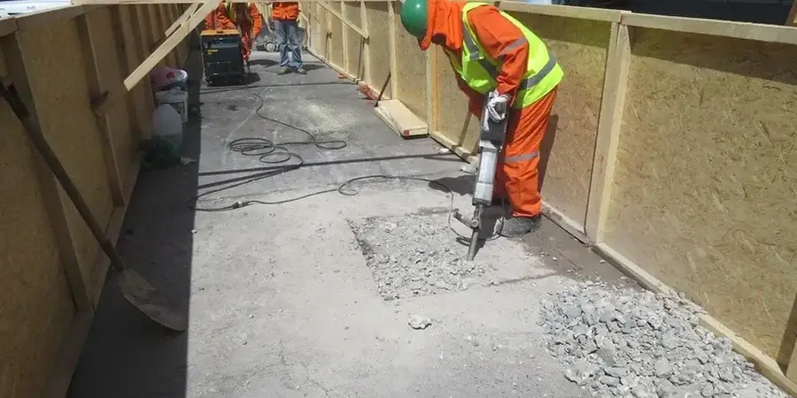

In Bremerhaven bieten wir umfassende geotechnische Dienstleistungen, die auf die spezifischen Herausforderungen der Region zugeschnitten sind. Unser Leistungsspektrum umfasst Baugrunderkundung, Gründungsberatung, Grundwasseruntersuchungen und geotechnische Überwachung – stets in enger Abstimmung mit den lokalen Gegebenheiten. Wir unterstützen Bauherren, Planer und Behörden von der ersten Standortbewertung bis zur abschließenden Dokumentation. Dabei legen wir besonderen Wert auf normgerechte Berichte und eine reibungslose Integration in den Planungsprozess. Erfahren Sie mehr über unsere Bodenklassifikation und wie wir durch präzise geotechnische Böschungsüberwachung die Sicherheit Ihrer Projekte gewährleisten.

Methodik und Umfang
Lokale Besonderheiten
Unsere Qualifikation für Projekte in Bremerhaven gründet auf einer konsolidierten regionalen Erfahrung mit den spezifischen Marsch- und Kleiböden sowie den tidalen Grundwasserverhältnissen. Wir verfügen über ein kalibriertes Labor für bodenmechanische Versuche, das nach DIN-Normen arbeitet. Durch die enge Zusammenarbeit mit lokalen Bohrfirmen, Prüfingenieuren und der Bauaufsicht stellen wir sicher, dass alle geotechnischen Nachweise den aktuellen Vorschriften entsprechen. Unsere Berichte sind stets normgerecht und nachvollziehbar, sodass Bauvorhaben termingerecht und sicher realisiert werden können. Für spezielle Anforderungen wie die Bemessung von Schottersäulen bieten wir maßgeschneiderte Lösungen an.
Benötigen Sie eine geotechnische Bewertung?
Antwort innerhalb von 24h.
E-Mail: kontakt@geotechnik.sbsErklärvideo
Geltende Normen
In Deutschland sind die maßgeblichen geotechnischen Normen das DIN EN 1997 (Eurocode 7) für die geotechnische Bemessung sowie die DIN 1054 für die Sicherheitsnachweise im Erd- und Grundbau. Für die Baugrunderkundung kommen die DIN EN ISO 22475 (Probenahme) und DIN 4020 (Geotechnische Untersuchungen) zur Anwendung. Die DIN 18196 regelt die Bodenklassifikation, während die DIN 4095 für die Dränung von Bauwerken relevant ist. Bei dynamischen Beanspruchungen oder Erdbebenlasten wird auf die DIN EN 1998 (Eurocode 8) zurückgegriffen. Alle Untersuchungen und Nachweise erfolgen streng nach diesen anerkannten Regeln der Technik.
Häufige Fragen
Welche besonderen Herausforderungen stellen die Marschböden in Bremerhaven für die Gründung von Gebäuden?
Die weichen, organischen Tone und Schluffe der Marsch sind stark setzungsempfindlich und weisen eine geringe Tragfähigkeit auf. Daher sind in der Regel Tiefgründungen (z. B. Pfähle) oder Bodenverbesserungsmaßnahmen erforderlich. Zudem ist der hohe Grundwasserstand zu beachten, der eine aufwändige Wasserhaltung während der Bauphase bedingen kann. Eine sorgfältige Baugrunderkundung und eine an die lokalen Verhältnisse angepasste Gründungsplanung sind daher unerlässlich.
Wie wirkt sich der Tideeinfluss auf das Grundwasser in Bremerhaven aus?
Der Grundwasserstand in Bremerhaven unterliegt aufgrund der Nähe zur Nordsee und zur Weser tidalen Schwankungen. Dies kann zu periodischen Änderungen der Grundwasserdruckhöhe führen, was bei der Bemessung von Baugruben, Gründungen und Drainagesystemen berücksichtigt werden muss. Zudem besteht in Hafennähe die Gefahr von Salzwasserintrusion, die die Korrosionsbeständigkeit von Bauteilen beeinträchtigen kann. Eine kontinuierliche Grundwassermessung und eine hydrogeologische Bewertung sind daher empfehlenswert.
Welche Normen sind in Deutschland für die geotechnische Bemessung von Bauwerken in Bremerhaven verbindlich?
In Deutschland ist der Eurocode 7 (DIN EN 1997) mit den nationalen Anhängen die zentrale Norm für die geotechnische Bemessung. Ergänzend gelten die DIN 1054 für Sicherheitsnachweise, die DIN 4020 für Baugrunderkundungen und die DIN 18196 für die Bodenklassifikation. Für Gründungen in Bereichen mit Erdbebenrisiko ist der Eurocode 8 (DIN EN 1998) zu beachten. Alle Nachweise müssen den anerkannten Regeln der Technik entsprechen und von einer dafür qualifizierten Person erstellt werden.
Welche typischen Projekte werden in Bremerhaven geotechnisch betreut?
In Bremerhaven stehen häufig Hafenbauprojekte, Kaimauern, Industrieanlagen, Wohn- und Gewerbegebäude sowie Infrastrukturmaßnahmen im Vordergrund. Aufgrund der weichen Böden und des hohen Grundwasserstands sind Tiefgründungen, Spundwände und Bodenverbesserungen oft erforderlich. Auch die Sanierung von Altlasten und die Errichtung von Deponien sind typische Aufgaben. Wir begleiten diese Projekte von der Baugrunderkundung über die Gründungsberatung bis zur bauleitenden Überwachung.